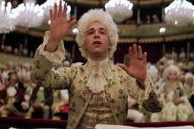
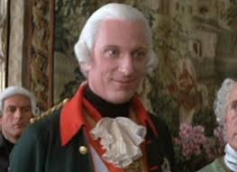

Es el narrador y eje emocional de la película. Salieri es un compositor respetado en la corte imperial, inicialmente devoto de Dios y convencido de que su talento sería recompensado. Sin embargo, al conocer a Mozart, su vida cambia radicalmente. Abraham interpreta con gran intensidad el paso de la admiración a la obsesiva envidia, mostrando a un hombre destruido por la mediocridad frente al genio. Su actuación es una de las más reconocidas del cine y le valió el Óscar al Mejor Actor.
Hulce interpreta a Mozart como un genio musical irrepetible, pero también como una persona impulsiva, infantil y caótica. Su actuación combina humor exagerado, energía constante y momentos de fragilidad emocional. Esta dualidad refuerza la idea de que el talento extraordinario no siempre va acompañado de madurez o estabilidad personal.

Constanze es la esposa de Mozart y representa el lado humano y cotidiano de su vida. Berridge muestra a una mujer que lo ama profundamente, pero que también debe enfrentar la pobreza, la inestabilidad económica y las tensiones del entorno artístico. Su personaje ayuda a mostrar el contraste entre el genio musical y la realidad material difícil.
Interpreta al emperador del Sacro Imperio Romano Germánico como un gobernante bien intencionado, pero limitado en su comprensión del arte musical. Su personaje refleja cómo el poder político influye en la música y en la carrera de los compositores de la época, aunque sin comprender del todo su profundidad.
